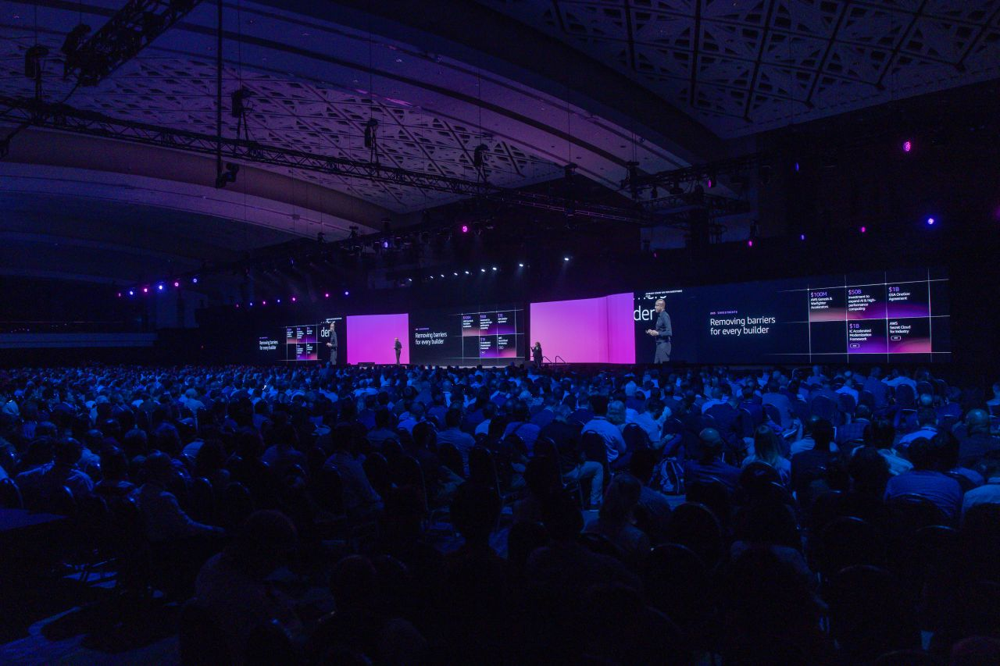
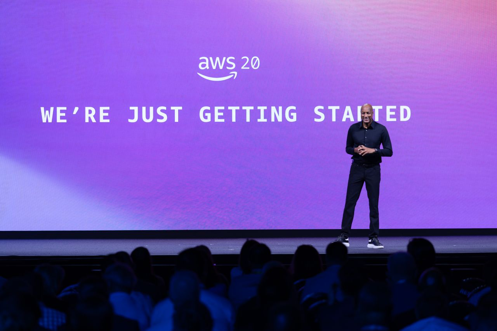
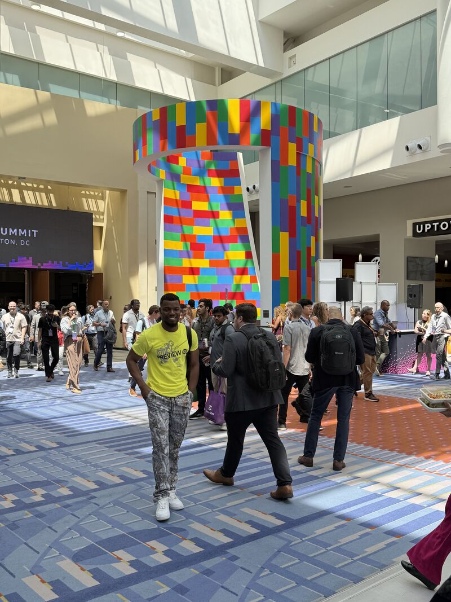
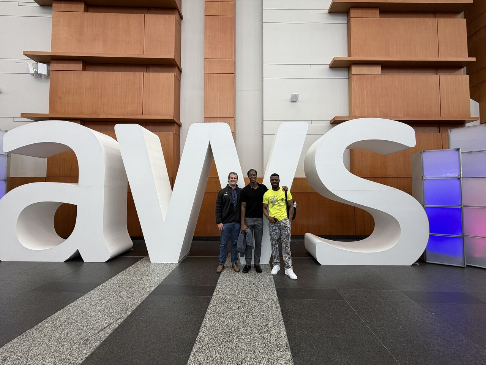

Earlier this summer, I had the opportunity to attend the AWS Summit in Washington, D.C., a two-day event held at the Walter E. Washington Convention Center that brought together builders, security practitioners, and cloud leaders from across the public and private sectors. As someone whose interests keep pulling toward the intersection of AI and cloud security, I couldn't have asked for better timing. I wanted to share some highlights with the club, both as a recap for those who couldn't make it and as motivation for anyone thinking about attending a summit like this in the future.

Setting the Stage: Secure, Agentic AI for the Public Sector
The keynote, delivered by Dave Levy, centered on how AWS is powering secure, agentic AI for public sector missions. It reshaped how I think about the relationship between AI, security, and mission-driven work. Rather than treating AI as a bolt-on feature, the organizations presenting were building it into the core of how they operate, with security and governance baked in from the start rather than added after the fact.

A Firehose of Real-World Sessions
With over 350 sessions running across the two days, the sheer scale of the event made one thing clear: agentic and generative AI are no longer proof-of-concept experiments. Organization after organization walked through how they're putting these systems into production today, from automating workflows to strengthening threat detection pipelines. For a cybersecurity student, watching that shift happen in real time was as much a lesson in engineering discipline as it was in AI itself.

Connecting with the Gannon Community
One of the most rewarding parts of the trip had nothing to do with the sessions. I got to reconnect with fellow Gannon alumni, Tinashe Katsande, Max V., and Kevin Paton, who are now out in the industry doing great work. Sharing those two days with people who walked the same halls I did is what turned a great event into a memorable one. It's a good reminder that the Gannon network extends well beyond campus, and that showing up to events like this is as much about who you meet as what you learn.

Why This Matters for the Club
Every session I sat in gave me another reason to keep pushing toward the goals I've set for myself in cloud security, and I'd encourage every member of Gannon Hacks to think about attending an event like this at least once before you graduate. Conferences like the AWS Summit are where the theory we cover in the classroom meets the scale and speed of how the industry is actually operating. If you're on the fence about applying for funding to attend a conference, my advice is simple: do it. The sessions are valuable, but the connections you walk away with are worth just as much.
Every session I sat in added another reason to keep pushing toward it.